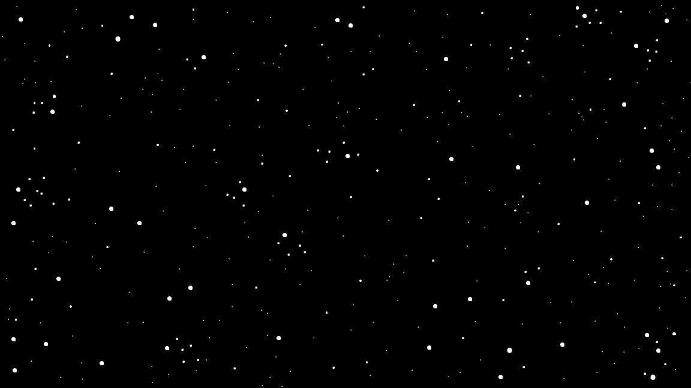

Grammars-based Star Wars Crawler
This is a Star Wars opening crawl generator, complete with Glup Shittos, nostalgia farming, and random Dune references. The results are often silly, sometimes oddly compelling, and always Star Wars-y. This experiment builds off of Adam Smith's Glitch game, bad-quests.
Technical
For the text of the main body, this generator uses a template based on A New Hope's opening crawl, and for the titles, it randomly chooses a template from an array of templates modeled after the nine films' titles.
The generator uses a replacer() function to randomly fill dynamic slots with words from a filler() bank. For static slots, the generator uses a setter() function with an additional map check so repeated names, factions, and pronouns stay consistent throughout a generated crawl.
Title generation uses the same core functions, then checks the word count and may prepend "THE" so the results better resemble the naming patterns of the films. The crawl animation itself uses p5.js transforms to tilt, translate, and raise the generated text.
Reflection
This was my first time working with grammars, and for such a simple concept I found myself getting really excited about the potency of grammars-based generation. I'm happy with the variety of outputs, and I think that, due to the OOP-ness of the generator itself, it will be easy to expand the generator to further increase the variety of outputs.
One thing that irks me about the generator is that it can sometimes feel a bit too random. I'd prefer it if things like the galaxy's starting state and end state felt more related. A next iteration could use mappings or sub-keys to guide output more precisely, along with synonym handling for repeated static slots.
Lastly, I'd like to add a star field, film grain, and generative music to get this thing Star Wars-maxxed.